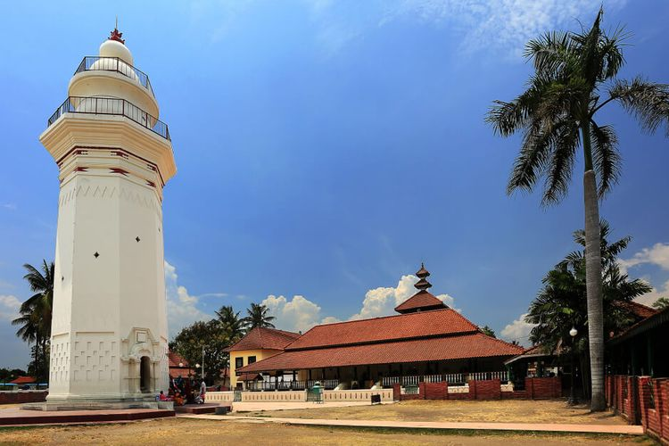

Destinasi Populer

Banten Lama
Masjid Agung Banten Lama menjadi salah satu oblek wisata ziarah bagi umat islam khususnya masyarakat Banten

Pantai Tanjung Lesung
Di tepi pantai, pengunjung bisa memandangi keindahan Gunung Krakatau. Tak hanya itu, ada hamparan perairan Selat Sunda yang juga memanjakan mata.

Desa Wisata Saba Budaya Baduy
Suku Baduy, juga dikenal sebagai Urang Kanékés, adalah masyarakat adat dan sub-etnis Sunda yang tinggal di pedalaman Kabupaten Lebak, Banten. Pengunjung yang datang harus siap menghadapi kondisi tanpa listrik, kendaraan, dan barang elektronik seperti ponsel dan kamera di Baduy Dalam.